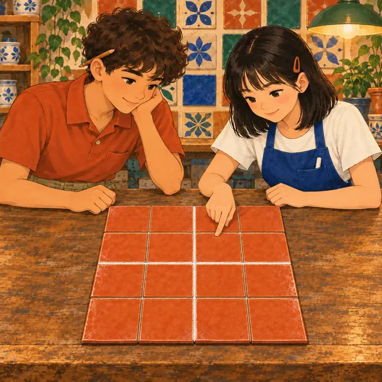

課前暖身漫畫：同一條邊，三種寫法
小瓷拿到一塊面積 \(48\) 的大方磚，邊長是 \(\sqrt{48}\)。阿岩發現它其實是 \(4\) 塊面積 \(12\) 的方磚拼成的，一邊排 \(2\) 塊，所以邊長也是 \(2\sqrt{12}\)；再仔細看，又是 \(16\) 塊面積 \(3\) 的小方磚，一邊排 \(4\) 塊，邊長是 \(4\sqrt{3}\)。同一條邊有三種寫法，哪一種最好用？這一節就來回答。
重點 1：根式的表示——像代數式一樣省略乘號
重點整理與敘述
- 根式：含有根號的算式，例如 \(3 + \sqrt{2}\)、\(4\sqrt{5}\)、\(\sqrt{10} \div 2\)。根號代表的數也能加減乘除，交換律、結合律、分配律都成立。
- 寫法跟代數式一樣：
| 代數式 | 根式 |
|---|---|
| \(3 \times x\) 寫成 \(3x\) | \(3 \times \sqrt{7}\) 寫成 \(3\sqrt{7}\) |
| \(\left(-\frac{2}{3}\right) \times x\) 寫成 \(-\frac{2}{3}x\) | 寫成 \(-\frac{2}{3}\sqrt{7}\) 或 \(-\frac{2\sqrt{7}}{3}\) |
| \(x \div 4\) 寫成 \(\frac{x}{4}\) | \(\sqrt{7} \div 4\) 寫成 \(\frac{\sqrt{7}}{4}\) 或 \(\frac{1}{4}\sqrt{7}\) |
⑴ \(a \times \sqrt{b} = a\sqrt{b}\) ⑵ \(\sqrt{b} \div a = \frac{\sqrt{b}}{a}\)
- 係數相乘、根號照抄：\(5\sqrt{3} \times (-4) = -20\sqrt{3}\)；\(\frac{2}{5} \times \frac{\sqrt{6}}{3} = \frac{2\sqrt{6}}{15}\)。
- 常見錯誤：\(\sqrt{10} \div 2\) 不能寫成 \(\sqrt{5}\)。\(2\) 在根號外面，就要除在根號外面：\(\frac{\sqrt{10}}{2} \approx 1.58\)，\(\sqrt{5} \approx 2.24\)。
- 幾個一樣的根號相加：\(\sqrt{2} + \sqrt{2} + \sqrt{2}\) 是 \(3\) 個 \(\sqrt{2}\)，寫成 \(3\sqrt{2}\)，就像 \(x + x + x = 3x\)。
視覺互動探索：方磚排一排
每塊方磚的邊長是 \(\sqrt{b}\)。切換乘、除、再乘一個數，看根式怎麼寫；切到「除」時，比比看兩種寫法的長度：
形成性評量 (根式的表示)
Q1. 下列哪一個寫法正確？
解析：答案為 B。\(3\) 個 \(\sqrt{13}\) 相加，就像 \(x + x + x = 3x\)，寫成 \(3\sqrt{13}\)。
A 錯：\(7\) 在根號外，\(\sqrt{14} \div 7 = \frac{\sqrt{14}}{7}\)，不能除進根號裡。
C 錯：\(5 \times \sqrt{11} = 5\sqrt{11}\)；\(\sqrt{55}\) 是 \(\sqrt{5} \times \sqrt{11}\)。
D 錯：\(\sqrt{\frac{17}{4}} = \frac{\sqrt{17}}{\sqrt{4}} = \frac{\sqrt{17}}{2}\)，不是 \(\frac{\sqrt{17}}{4}\)。
Q2. 計算 \(\frac{4\sqrt{19}}{9} \times (-6)\) 的值。
解析：答案為 A。係數相乘、根號照抄：
\[\begin{aligned} & \frac{4}{9} \times (-6) \times \sqrt{19} \\ &= -\frac{8}{3}\sqrt{19} = -\frac{8\sqrt{19}}{3} \end{aligned}\]
B 錯：把 \(\times (-6)\) 算成 \(\div (-6)\)，\(\frac{4}{9} \div 6 = \frac{2}{27}\)。
C 錯：把 \(6\) 乘進根號裡，寫成 \(\sqrt{19 \times 6} = \sqrt{114}\)，係數的 \(\frac{4}{9}\) 卻沒乘到 \(6\)。
D 錯：正數乘負數，結果是負的。
重點 2：根式的乘法——根號裡的數直接相乘
重點整理與敘述
- 為什麼 \(\sqrt{2} \times \sqrt{7} = \sqrt{14}\)： \[\begin{aligned} & (\sqrt{2} \times \sqrt{7})^2 \\ &= (\sqrt{2})^2 \times (\sqrt{7})^2 \\ &= 2 \times 7 = 14 \end{aligned}\] 而且 \(\sqrt{2} \times \sqrt{7} \gt 0\)，所以它就是 \(14\) 的正平方根 \(\sqrt{14}\)。
- 有係數時：係數乘係數、根號乘根號，例如 \((-3\sqrt{2}) \times 4\sqrt{5} = -12\sqrt{10}\)。
- 同一個根號相乘：\(\sqrt{a} \times \sqrt{a} = a\)，例如 \(2\sqrt{7} \times 3\sqrt{7} = 6 \times 7 = 42\)。
- 常見錯誤：\(\sqrt{3} \times \sqrt{5}\) 是 \(\sqrt{15}\)，不是 \(\sqrt{8}\)：根號裡是相乘，不是相加。
視覺互動探索：兩塊磚的邊長相乘
調兩塊磚的面積 \(a\)、\(b\)，看 \(\sqrt{a} \times \sqrt{b}\) 為什麼等於 \(\sqrt{ab}\)；下方用近似值驗算。切到「有係數」練習係數乘係數、根號乘根號：
形成性評量 (根式的乘法)
Q3. 計算 \((-2\sqrt{11}) \times \frac{3}{4}\sqrt{13}\) 的值。
解析：答案為 D。係數 \((-2) \times \frac{3}{4} = -\frac{3}{2}\)，根號 \(\sqrt{11} \times \sqrt{13} = \sqrt{143}\)（\(143 = 11 \times 13\)，沒有平方因數），合起來是 \(-\frac{3\sqrt{143}}{2}\)。
A 錯：根號裡做成加法 \(11 + 13 = 24\)。
B 錯：係數做成加法 \(-2 + \frac{3}{4} = -\frac{5}{4}\)。
C 錯：負數乘正數，結果是負的。
Q4. 下列哪一個式子的值是整數？
解析：答案為 C。\(\sqrt{27} \times \sqrt{3} = \sqrt{81} = 9\)。
A 錯：\(\sqrt{6} \times \sqrt{15} = \sqrt{90} = 3\sqrt{10}\)。
B 錯：\(2\sqrt{5} \times 5\sqrt{2} = 10\sqrt{10}\)，係數是整數，但 \(\sqrt{10}\) 不是。
D 錯：\(\sqrt{14} \times \sqrt{21} = \sqrt{294} = 7\sqrt{6}\)。
重點 3：根式的除法——根號裡的數直接相除
重點整理與敘述
- 為什麼 \(\frac{\sqrt{3}}{\sqrt{7}} = \sqrt{\frac{3}{7}}\)：\(\left(\frac{\sqrt{3}}{\sqrt{7}}\right)^2 = \frac{3}{7}\)，而且 \(\frac{\sqrt{3}}{\sqrt{7}} \gt 0\)，所以它就是 \(\frac{3}{7}\) 的正平方根。
- 例：\(\sqrt{56} \div \sqrt{8} = \sqrt{56 \div 8} = \sqrt{7}\)。
- 有係數時：寫成分數，係數跟係數約分、根號跟根號約分： \[\begin{aligned} & (-20\sqrt{30}) \div (8\sqrt{6}) \\ &= -\frac{20}{8} \times \sqrt{\frac{30}{6}} \\ &= -\frac{5\sqrt{5}}{2} \end{aligned}\]
- 常見錯誤：\(\sqrt{56} \div \sqrt{8}\) 不是 \(\sqrt{48}\)：根號裡是相除，不是相減。
視覺互動探索：長邊是短邊的幾倍
兩塊磚的面積是 \(a = b \times k\) 與 \(b\)。看 \(\sqrt{a} \div \sqrt{b}\) 怎麼變成 \(\sqrt{k}\)，下方的兩條線段就是兩塊磚的邊長。切到「有係數」練習分開相除：
形成性評量 (根式的除法)
Q5. 計算 \(\sqrt{117} \div \sqrt{13}\) 的值。
解析：答案為 A。根號裡的數直接相除：
\[\begin{aligned} & \sqrt{117} \div \sqrt{13} \\ &= \sqrt{117 \div 13} = \sqrt{9} = 3 \end{aligned}\]
B 錯：\(117 \div 13 = 9\) 之後忘了開根號。
C 錯：把除法做成減法 \(117 - 13 = 104\)。
D 錯：只把 \(\sqrt{117}\) 化成 \(3\sqrt{13}\)，忘了再除以 \(\sqrt{13}\)。
Q6. 計算 \((-15\sqrt{22}) \div (6\sqrt{11})\) 的值。
解析：答案為 C。係數 \(-15 \div 6 = -\frac{5}{2}\)，根號 \(\sqrt{22} \div \sqrt{11} = \sqrt{2}\)，合起來是 \(-\frac{5\sqrt{2}}{2}\)。
A 錯：根號裡做成減法 \(22 - 11 = 11\)。
B 錯：根號裡做成乘法 \(22 \times 11 = 242\)。
D 錯：負數除以正數，結果是負的。
重點 4：最簡根式——三個條件都要符合
重點整理與敘述
- 同一個數有很多寫法：\(\sqrt{48} = 2\sqrt{12} = 4\sqrt{3}\)，三個值都一樣。我們約定化成「最簡根式」，方便比較與合併。
\(a\) 是整數、分數或小數；\(b\) 是正整數，
且 \(b\) 的標準分解式中，每個質因數的次數都是 \(1\)。
- 例：\(5\sqrt{6}\)、\(-2\sqrt{11}\)、\(\frac{\sqrt{30}}{4}\)、\(0.3\sqrt{7}\) 都是最簡根式。
- 有下列情形就不是最簡根式：
| 情形 | 例子 |
|---|---|
| ⑴ 根號裡有質因數的次數大於 \(1\) | \(\sqrt{20} = \sqrt{2^2 \times 5}\)、\(\sqrt{24} = \sqrt{2^3 \times 3}\) |
| ⑵ 分母含有根號 | \(\frac{3}{\sqrt{7}}\)、\(\frac{\sqrt{2}}{\sqrt{5}}\) |
| ⑶ 根號裡是分數或小數 | \(\sqrt{\frac{2}{5}}\)、\(\sqrt{0.3}\) |
- 根號在分子可以、在分母不行：\(\frac{\sqrt{15}}{2}\) 是最簡根式，\(\frac{2}{\sqrt{15}}\) 不是。
視覺互動探索：最簡根式檢查站
選一種寫法、調整數字，讓根式通過三道關卡。根號裡的質因數，次數大於 \(1\) 的會變成玫瑰色；沒過關的會直接顯示化簡後的樣子：
形成性評量 (最簡根式)
Q7. 下列何者是最簡根式？
解析：答案為 B。\(51 = 3 \times 17\)，每個質因數都只有一次；分母 \(4\) 不含根號，所以是最簡根式。
A 錯：\(98 = 2 \times 7^2\)，\(7\) 的次數是 \(2\)，\(\sqrt{98} = 7\sqrt{2}\)。
C 錯：分母含有根號。
D 錯：根號裡是小數。
Q8. 小瓷說：「\(3\sqrt{75}\) 的根號裡是正整數、分母也沒有根號，所以它是最簡根式。」她的說法錯在哪裡？
解析：答案為 B。最簡根式還要求根號裡每個質因數的次數都是 \(1\)；\(75 = 3 \times 5^2\)，所以 \(3\sqrt{75} = 3 \times 5\sqrt{3} = 15\sqrt{3}\)。
A 錯：理由同上，三個條件少檢查了一個。
C 錯：係數可以是任何整數、分數或小數。
D 錯：\(\sqrt{6}\)、\(\sqrt{15}\) 都是最簡根式，但 \(6\)、\(15\) 不是質數。
重點 5：化成最簡根式——把平方因數提到根號外
重點整理與敘述
- 作法：寫出根號裡的標準分解式，每一對相同的質因數提一個到根號外。
- 例：\(180 = 2^2 \times 3^2 \times 5\)， \[\begin{aligned} & \sqrt{180} \\ &= \sqrt{2^2 \times 3^2 \times 5} \\ &= 2 \times 3 \times \sqrt{5} = 6\sqrt{5} \end{aligned}\]
- 用磁磚看：面積 \(48\) 的大方磚可以切成 \(2 \times 2\) 塊面積 \(12\) 的方磚，也可以切成 \(4 \times 4\) 塊面積 \(3\) 的小方磚，所以 \(\sqrt{48} = 2\sqrt{12} = 4\sqrt{3}\)。\(3\) 已經切不下去了，\(4\sqrt{3}\) 是最簡根式。
- 兩個根式相乘：可以先乘再化簡，也可以先各自化簡再乘，答案一樣。先乘再化簡： \[\begin{aligned} & \sqrt{32} \times \sqrt{6} \\ &= \sqrt{192} = 8\sqrt{3} \end{aligned}\] 先化簡再乘： \[\begin{aligned} & \sqrt{32} \times \sqrt{6} \\ &= 4\sqrt{2} \times \sqrt{6} \\ &= 4\sqrt{12} = 8\sqrt{3} \end{aligned}\]
- 提醒：\(b\) 要是正數才能直接提出來。\(\sqrt{(-3)^2 \times 2} = \sqrt{18} = 3\sqrt{2}\)，不是 \(-3\sqrt{2}\)。

視覺互動探索：大方磚切小方磚
選大方磚的面積 \(n\)，再把每一邊切成 \(k\) 份。切出來的小方磚面積還有平方因數，就能再切；切到不能再切，就是最簡根式：
形成性評量 (提出平方因數)
Q9. 將 \(\sqrt{252}\) 化為最簡根式。
解析：答案為 D。\(252 = 2^2 \times 3^2 \times 7\)，所以 \(\sqrt{252} = 2 \times 3 \times \sqrt{7} = 6\sqrt{7}\)。
A、B 錯：值都等於 \(6\sqrt{7}\)，但 \(28 = 2^2 \times 7\)、\(63 = 3^2 \times 7\) 還有平方因數，沒有化完。
C 錯：根號裡外對調了，\(7\sqrt{6} = \sqrt{294}\)。
Q10. 計算 \(\sqrt{18} \times \sqrt{60}\)，並化為最簡根式。
解析：答案為 A。先各自化簡再相乘：
\[\begin{aligned} & \sqrt{18} \times \sqrt{60} \\ &= 3\sqrt{2} \times 2\sqrt{15} \\ &= 6\sqrt{30} \end{aligned}\]
B 錯：值等於 \(6\sqrt{30}\)，但 \(120 = 2^2 \times 30\) 還沒化完。
C 錯：把 \(\sqrt{2} \times \sqrt{15}\) 算成 \(\sqrt{2 + 15}\)。
D 錯：漏乘了 \(\sqrt{2}\)。
重點 6：分母有理化——讓分母不再有根號
重點整理與敘述
- 分母有理化：分母有根號時，分子、分母同乘一個根式，讓分母變成不含根號的數。
- 值不會變：同乘 \(\sqrt{b}\) 等於乘 \(\frac{\sqrt{b}}{\sqrt{b}} = 1\)。
- 例：\(\frac{4}{\sqrt{6}} = \frac{4\sqrt{6}}{6} = \frac{2\sqrt{6}}{3}\)，最後記得約分。
- 分母先化簡，乘的數比較小： \[\begin{aligned} \frac{5}{\sqrt{8}} &= \frac{5}{2\sqrt{2}} \\ &= \frac{5\sqrt{2}}{2 \times 2} = \frac{5\sqrt{2}}{4} \end{aligned}\] 直接乘 \(\sqrt{8}\) 也可以，只是分子變成 \(5\sqrt{8}\)，還得再化簡一次。
- 常見錯誤：只把分母乘 \(\sqrt{b}\)、分子沒乘，值就變了。
視覺互動探索：分母去根號
調整分子 \(c\) 與分母根號裡的 \(n\)。比一比「直接乘 \(\sqrt{n}\)」和「先化簡分母」兩種做法，最下面驗算值有沒有變：
形成性評量 (分母有理化)
Q11. 將 \(\frac{14}{\sqrt{35}}\) 化為最簡根式。
解析：答案為 C。分子分母同乘 \(\sqrt{35}\)，再約分：
\[\begin{aligned} \frac{14}{\sqrt{35}} &= \frac{14\sqrt{35}}{35} \\ &= \frac{2\sqrt{35}}{5} \end{aligned}\]
A 錯：值相等，但 \(14\) 和 \(35\) 還能約分。
B 錯：約分時把 \(\sqrt{35}\) 也一起約掉了。
D 錯：\(\frac{14}{35} = \frac{2}{5}\)，分母的 \(5\) 漏掉了。
Q12. 將 \(\frac{9}{2\sqrt{27}}\) 化為最簡根式。
解析：答案為 B。分母先化簡 \(2\sqrt{27} = 6\sqrt{3}\)：
\[\begin{aligned} \frac{9}{6\sqrt{3}} &= \frac{9\sqrt{3}}{6 \times 3} \\ &= \frac{9\sqrt{3}}{18} = \frac{\sqrt{3}}{2} \end{aligned}\]
A 錯：分母乘 \(\sqrt{3}\) 後忘了 \(\sqrt{3} \times \sqrt{3} = 3\)，寫成 \(\frac{9\sqrt{3}}{6} = \frac{3\sqrt{3}}{2}\)。
C 錯：直接同乘 \(\sqrt{27}\)，分母是 \(54\)，分子卻只寫 \(9\sqrt{3}\)（\(\sqrt{27} = 3\sqrt{3}\) 的 \(3\) 漏了），得 \(\frac{9\sqrt{3}}{54} = \frac{\sqrt{3}}{6}\)。
D 錯：值相等，但根號裡 \(27 = 3^3\) 還沒化簡，也還能約分。
重點 7：根號裡是分數或小數——兩種化法
重點整理與敘述
- 小數先化成分數：\(0.6 = \frac{6}{10} = \frac{3}{5}\)。
- 方法一：分開開根號，再有理化： \[\begin{aligned} \sqrt{\frac{7}{12}} &= \frac{\sqrt{7}}{\sqrt{12}} = \frac{\sqrt{7}}{2\sqrt{3}} \\ &= \frac{\sqrt{21}}{6} \end{aligned}\]
- 方法二：根號裡擴分，讓分母變成平方數： \[\begin{aligned} \sqrt{\frac{7}{12}} &= \sqrt{\frac{7 \times 3}{12 \times 3}} = \sqrt{\frac{21}{36}} \\ &= \frac{\sqrt{21}}{6} \end{aligned}\]
- 小數的例子：\(\sqrt{0.6} = \sqrt{\frac{3}{5}} = \frac{\sqrt{3}}{\sqrt{5}} = \frac{\sqrt{15}}{5}\)。
- 方法二要乘多少：乘「讓分母變成平方數的最小數」，數字比較小；乘分母本身也可以，只是數字大、不好算。
- 小數位數看清楚：\(\sqrt{0.4} = \sqrt{\frac{2}{5}}\)，但 \(\sqrt{0.04} = \sqrt{\frac{4}{100}} = \frac{2}{10} = 0.2\)。
視覺互動探索：兩種方法化簡
選根號裡是分數還是小數，再切換方法一、方法二，比一比步驟；最下面驗算兩種方法答案一樣：
形成性評量 (分數與小數)
Q13. 將 \(\sqrt{0.45}\) 化為最簡根式。
解析：答案為 D。\(0.45 = \frac{45}{100}\)：
\[\begin{aligned} \sqrt{0.45} &= \frac{\sqrt{45}}{\sqrt{100}} \\ &= \frac{3\sqrt{5}}{10} \end{aligned}\]
A 錯：看成 \(\sqrt{4.5} = \sqrt{\frac{9}{2}} = \frac{3\sqrt{2}}{2}\)，小數位數看錯了。
B 錯：分母的 \(100\) 忘了開根號。
C 錯：值相等，但 \(45 = 3^2 \times 5\) 還沒化簡。
Q14. 將 \(\sqrt{\frac{11}{18}}\) 化為最簡根式。
解析：答案為 A。根號裡分子分母同乘 \(2\)，讓分母變成平方數：
\[\begin{aligned} \sqrt{\frac{11}{18}} &= \sqrt{\frac{22}{36}} \\ &= \frac{\sqrt{22}}{6} \end{aligned}\]
B 錯：分母的 \(18\) 忘了開根號。
C 錯：擴分後分母的 \(36\) 忘了開根號。
D 錯：值相等，但 \(198 = 3^2 \times 22\) 還能化簡，化完是 \(\frac{3\sqrt{22}}{18} = \frac{\sqrt{22}}{6}\)。
重點 8：同類方根——化簡後根號裡一樣
重點整理與敘述
- 同類方根：兩個或兩個以上的根式化成最簡根式 \(a\sqrt{b}\) 之後，根號裡的 \(b\) 相同，就稱它們是同類方根。
- 例：\(\sqrt{12} = 2\sqrt{3}\)、\(\frac{\sqrt{3}}{4}\)、\(\sqrt{\frac{1}{3}} = \frac{\sqrt{3}}{3}\)、\(-5\sqrt{3}\) 都是 \(\sqrt{3}\) 的同類方根。
- 看起來不像，化簡後才是：\(\sqrt{44} = 2\sqrt{11}\)、\(\sqrt{99} = 3\sqrt{11}\)，兩者是同類方根。
- 看起來像，其實不是：\(\sqrt{18} = 3\sqrt{2}\)、\(\sqrt{12} = 2\sqrt{3}\)，化簡後根號裡不一樣，不是同類方根。
- 化簡後根號不見了：例如 \(\sqrt{16} = 4\)，它就是一般的數，不是哪一個根式的同類方根。
視覺互動探索：同類方根分類箱
調一個根式，它會先化成最簡根式，再落進根號裡那個數的箱子。放開滑桿，這塊磚就留在箱子裡；同一箱的就是同類方根：
形成性評量 (同類方根)
Q15. 下列哪一個不是 \(\sqrt{7}\) 的同類方根？
解析：答案為 C。\(147 = 3 \times 7^2\)，\(\sqrt{147} = 7\sqrt{3}\)：\(7\) 跑到根號外，根號裡是 \(3\)，它是 \(\sqrt{3}\) 的同類方根。
A：\(\sqrt{63} = 3\sqrt{7}\)。
B：\(\sqrt{\frac{7}{64}} = \frac{\sqrt{7}}{8}\)。
D：\(\frac{10}{\sqrt{7}} = \frac{10\sqrt{7}}{7}\)。這三個化簡後根號裡都是 \(7\)。
Q16. 下列哪一組的三個數全部是同類方根？
解析：答案為 D。\(\sqrt{72} = 6\sqrt{2}\)、\(\sqrt{98} = 7\sqrt{2}\)、\(\sqrt{0.5} = \sqrt{\frac{1}{2}} = \frac{\sqrt{2}}{2}\)，根號裡都是 \(2\)。
A 錯：\(5\sqrt{3}\)、\(6\sqrt{3}\)、\(5\sqrt{5}\)，最後一個不同類。
B 錯：\(3\sqrt{6}\)、\(4\sqrt{6}\)、\(2\sqrt{15}\)，最後一個不同類。
C 錯：\(3\sqrt{7}\)、\(4\sqrt{7}\)，但 \(\sqrt{0.7} = \sqrt{\frac{7}{10}} = \frac{\sqrt{70}}{10}\)，根號裡是 \(70\)。
重點 9：根式的加減——同類方根才能合併
重點整理與敘述
- 同類方根像同類項：就像 \(2x + 4x = 6x\)， \[\begin{aligned} & 2\sqrt{5} + 4\sqrt{5} \\ &= (2 + 4)\sqrt{5} = 6\sqrt{5} \end{aligned}\]
- 不同類不能合併：\(3\sqrt{2} + 5\sqrt{3}\) 就是最後答案，就像 \(3x + 5y\)。
- 先化簡才看得出同類： \[\begin{aligned} & 4\sqrt{6} - \sqrt{24} + \sqrt{3} \\ &= 4\sqrt{6} - 2\sqrt{6} + \sqrt{3} \\ &= 2\sqrt{6} + \sqrt{3} \end{aligned}\]
- 有分母的先有理化：\(\frac{6}{\sqrt{3}} - \sqrt{3} = 2\sqrt{3} - \sqrt{3} = \sqrt{3}\)。
- 常見錯誤：根號不能拆開加減，\(\sqrt{a} + \sqrt{b} \ne \sqrt{a + b}\)。例如 \(\sqrt{9} + \sqrt{16} = 3 + 4 = 7\)，但 \(\sqrt{25} = 5\)；減法也一樣，\(\sqrt{25} - \sqrt{9} = 2\)，但 \(\sqrt{16} = 4\)。
視覺互動探索：同一種磚才能合併
兩項先化成最簡根式，同一種顏色的磚（根號裡相同）才能排在一起合併；虛線的磚代表要扣掉。切到「√a + √b」看根號為什麼不能拆開加：
形成性評量 (根式的加減)
Q17. 化簡 \(\sqrt{50} - 3\sqrt{6} + \sqrt{54} - \sqrt{8}\)。
解析：答案為 B。每一項先化成最簡根式，再合併同類方根：
\[\begin{aligned} & 5\sqrt{2} - 3\sqrt{6} + 3\sqrt{6} - 2\sqrt{2} \\ &= (5 - 2)\sqrt{2} + (-3 + 3)\sqrt{6} \\ &= 3\sqrt{2} \end{aligned}\]
A 錯：把 \(\sqrt{50} - \sqrt{8}\) 寫成 \(\sqrt{50 - 8} = \sqrt{42}\)，根號不能拆開減。
C 錯：\(-\sqrt{8}\) 的負號沒帶到，算成 \(5\sqrt{2} + 2\sqrt{2}\)。
D 錯：\(+\sqrt{54}\) 看成減號，算成 \(-3\sqrt{6} - 3\sqrt{6} = -6\sqrt{6}\)。
Q18. 下列哪一個等式成立？
解析：答案為 C。
\[\begin{aligned} & \sqrt{20} + \sqrt{45} \\ &= 2\sqrt{5} + 3\sqrt{5} = 5\sqrt{5} \end{aligned}\]
而 \(\sqrt{125} = 5\sqrt{5}\)，所以成立。注意：它成立是因為化簡後同類方根合併，不是因為根號能拆開加（\(20 + 45 = 65\)，不是 \(125\)）。
A 錯：\(8 + 6 = 14\)，\(\sqrt{100} = 10\)。
B 錯：\(5\sqrt{2} - 3\sqrt{2} = 2\sqrt{2}\)，但 \(\sqrt{32} = 4\sqrt{2}\)。
D 錯：\(7\sqrt{2} - \sqrt{2} = 6\sqrt{2}\)，根號不會消失。
重點 10：根式的四則運算——先乘除、後加減
重點整理與敘述
- 順序和有理數一樣：先乘方，再乘除，最後加減；有括號先算括號裡面。
- 連乘除放進同一個根號： \[\begin{aligned} & \sqrt{6} \times \sqrt{10} \div \sqrt{15} \\ &= \sqrt{\frac{6 \times 10}{15}} = \sqrt{4} = 2 \end{aligned}\]
- 正負號先決定，再放進根號： \[\begin{aligned} & (-\sqrt{12}) \times \sqrt{\frac{1}{6}} \\ &= -\sqrt{12 \times \frac{1}{6}} = -\sqrt{2} \end{aligned}\]
- 例： \[\begin{aligned} & \sqrt{3} \times \sqrt{6} - 2\sqrt{2} \\ &= \sqrt{18} - 2\sqrt{2} \\ &= 3\sqrt{2} - 2\sqrt{2} = \sqrt{2} \end{aligned}\]
- 最後的答案要化成最簡根式：根號裡沒有平方因數、分母沒有根號。
- 整數和根式不能合併：\(5 - 3\sqrt{2}\) 已經是最後答案，不能寫成 \(2\sqrt{2}\)。
視覺互動探索：照順序做工
「連乘除」把三個根號放進同一個根號；「有加減」看先乘後減的順序，最下面是先算減法的錯誤結果：
形成性評量 (四則運算)
Q19. 化簡 \(\sqrt{\frac{5}{6}} \times \sqrt{\frac{3}{10}} \div \sqrt{\frac{1}{8}}\)。
解析：答案為 A。全部放進同一個根號，除以 \(\frac{1}{8}\) 就是乘 \(8\)：
\[\begin{aligned} & \sqrt{\frac{5}{6} \times \frac{3}{10} \times 8} \\ &= \sqrt{\frac{1}{4} \times 8} = \sqrt{2} \end{aligned}\]
B 錯：把 \(\div\) 當成 \(\times\)，\(\sqrt{\frac{1}{4} \times \frac{1}{8}} = \sqrt{\frac{1}{32}} = \frac{\sqrt{2}}{8}\)。
C 錯：\(\frac{1}{4} \times 8 = 2\) 之後忘了開根號。
D 錯：把 \(\sqrt{\frac{1}{4}}\) 算成 \(\frac{1}{4}\)，得 \(\frac{1}{4} \times \sqrt{8} = \frac{\sqrt{2}}{2}\)。
Q20. 化簡 \((-2\sqrt{15}) \times \left(-\sqrt{\frac{3}{5}}\right) - 4\sqrt{3}\)。
解析：答案為 D。先乘：負負得正，
\[\begin{aligned} & 2\sqrt{15 \times \frac{3}{5}} - 4\sqrt{3} \\ &= 2\sqrt{9} - 4\sqrt{3} = 6 - 4\sqrt{3} \end{aligned}\]
A 錯：把 \(6\) 和 \(-4\sqrt{3}\) 合併成 \((6 - 4)\sqrt{3}\)，但 \(6\) 不是 \(\sqrt{3}\) 的同類方根。
B 錯：負數乘負數應該是正的。
C 錯：減號抄成加號。
重點 11：分配律——每一項都要乘到
重點整理與敘述
- 分配律在根式照樣成立，三種常見的樣子：
- \(a(b + c) = ab + ac\)： \[\begin{aligned} & \sqrt{3}(\sqrt{6} + \sqrt{15}) \\ &= \sqrt{18} + \sqrt{45} \\ &= 3\sqrt{2} + 3\sqrt{5} \end{aligned}\]
- \((b + c) \div a = \frac{b}{a} + \frac{c}{a}\)： \[\begin{aligned} & (\sqrt{10} - \sqrt{15}) \div \sqrt{5} \\ &= \sqrt{2} - \sqrt{3} \end{aligned}\]
- \((a + b)(c + d)\)：展開成 \(ac + ad + bc + bd\)， \[\begin{aligned} & (\sqrt{2} + 1)(\sqrt{2} + 3) \\ &= 2 + 3\sqrt{2} + \sqrt{2} + 3 \\ &= 5 + 4\sqrt{2} \end{aligned}\]
- 每一項都要乘到：括號外的數要乘括號裡的每一項，不能只乘第一項。
- 除以根式也可以先有理化：\(\frac{\sqrt{10} - \sqrt{15}}{\sqrt{5}}\) 可以拆成兩個分數，也可以分子分母同乘 \(\sqrt{5}\)，答案一樣。
視覺互動探索：磁磚乘法表
表格的每一格是「列 × 行」。三種樣子都展開成格子，顏色相同的格子是同類方根，最後合併：
形成性評量 (分配律)
Q21. 化簡 \(2\sqrt{7}\,(\sqrt{14} - \sqrt{28})\)。
解析：答案為 B。分配之後逐項化簡：
\[\begin{aligned} & 2\sqrt{98} - 2\sqrt{196} \\ &= 2 \times 7\sqrt{2} - 2 \times 14 \\ &= 14\sqrt{2} - 28 \end{aligned}\]
A 錯：只乘了第一項，\(\sqrt{28}\) 沒有乘到 \(2\sqrt{7}\)。
C 錯：先把 \(\sqrt{14} - \sqrt{28}\) 當成 \(-\sqrt{14}\)（根號拆開減），得 \(2\sqrt{7} \times (-\sqrt{14}) = -14\sqrt{2}\)。
D 錯：第二項的負號弄丟了。
Q22. 化簡 \((\sqrt{6} + 2)(\sqrt{6} - 3)\)。
解析：答案為 C。展開成四項：
\[\begin{aligned} & 6 - 3\sqrt{6} + 2\sqrt{6} - 6 \\ &= -\sqrt{6} \end{aligned}\]
A 錯：\(2 \times (-3)\) 算成 \(+6\)，得 \(6 - \sqrt{6} + 6 = 12 - \sqrt{6}\)。
B 錯：把 \(\sqrt{6} \times \sqrt{6}\) 算成 \(\sqrt{6}\)，得 \(\sqrt{6} - 3\sqrt{6} + 2\sqrt{6} - 6 = -6\)。
D 錯：漏乘 \(2 \times (-3)\) 這一項。
重點 12：乘法公式——根式也能套
重點整理與敘述
- 第三冊 1-1 的乘法公式，把 \(a\)、\(b\) 換成根式照樣成立：
- 和的平方 \((a + b)^2 = a^2 + 2ab + b^2\)： \[\begin{aligned} & (\sqrt{5} + \sqrt{2})^2 \\ &= 5 + 2\sqrt{10} + 2 \\ &= 7 + 2\sqrt{10} \end{aligned}\]
- 差的平方 \((a - b)^2 = a^2 - 2ab + b^2\)： \[\begin{aligned} & (2\sqrt{3} - 1)^2 \\ &= 12 - 4\sqrt{3} + 1 \\ &= 13 - 4\sqrt{3} \end{aligned}\]
- 平方差 \((a + b)(a - b) = a^2 - b^2\)： \[\begin{aligned} & (\sqrt{7} + 2)(\sqrt{7} - 2) \\ &= 7 - 4 = 3 \end{aligned}\]
- 係數也要平方：\((2\sqrt{3})^2 = 2^2 \times 3 = 12\)，不是 \(2 \times 3 = 6\)。
- 平方差讓根號消失：兩個括號只差中間的正負號時，乘出來沒有根號——這正是重點 13 要用的。
- 常見錯誤：\((\sqrt{5} + \sqrt{2})^2 \ne 5 + 2\)，漏掉了中間項 \(2\sqrt{10}\)。
視覺互動探索：面積拼圖套公式
設 \(x = p\sqrt{a}\)、\(y = q\sqrt{b}\)（\(b = 1\) 時 \(y\) 是整數）。選一個公式，左邊的拼圖照實際長度畫，每一塊的面積就是公式裡的一項：
形成性評量 (乘法公式)
Q23. 化簡 \((\sqrt{11} - 2\sqrt{3})^2\)。
解析：答案為 A。用差的平方 \(a^2 - 2ab + b^2\)，其中 \(a = \sqrt{11}\)、\(b = 2\sqrt{3}\)：\(a^2 = 11\)、\(b^2 = 12\)、\(2ab = 4\sqrt{33}\)，
\[\begin{aligned} & a^2 - 2ab + b^2 \\ &= 11 - 4\sqrt{33} + 12 \\ &= 23 - 4\sqrt{33} \end{aligned}\]
B 錯：寫成 \((\sqrt{11})^2 - (2\sqrt{3})^2 = 11 - 12\)，漏了中間項。
C 錯：中間項少乘了 \(2\)。
D 錯：差的平方，中間項是減號。
Q24. 若 \(x = \sqrt{13} + 3\)、\(y = \sqrt{13} - 3\)，則 \(xy\) 的值是多少？
解析：答案為 B。用平方差：\(xy = (\sqrt{13})^2 - 3^2 = 13 - 9 = 4\)。
A 錯：中間應該是減號，算成 \(13 + 9\)。
C 錯：\(3\) 忘了平方，算成 \(13 - 3\)。
D 錯：把 \(\sqrt{13} \times \sqrt{13}\) 寫成 \(\sqrt{13}\)，它應該是 \(13\)。
重點 13：分母是兩項——乘共軛，用平方差消掉根號
重點整理與敘述
- 分母是兩項時，只乘一個根號消不掉根號；要乘它的共軛：兩項相同、只把中間的正負號換掉。
- 為什麼有用：\((\sqrt{a} + \sqrt{b})(\sqrt{a} - \sqrt{b}) = a - b\)，平方差把根號全部消掉。
\(\frac{c}{\sqrt{a} - \sqrt{b}}\)：分子分母同乘 \(\sqrt{a} + \sqrt{b}\)
分母都會變成 \(a - b\)。
- 例： \[\begin{aligned} \frac{1}{\sqrt{5} + \sqrt{3}} &= \frac{\sqrt{5} - \sqrt{3}}{5 - 3} \\ &= \frac{\sqrt{5} - \sqrt{3}}{2} \end{aligned}\]
- 整數和根號也一樣： \[\begin{aligned} \frac{4}{3 - \sqrt{5}} &= \frac{4(3 + \sqrt{5})}{9 - 5} \\ &= 3 + \sqrt{5} \end{aligned}\]
- 常見錯誤：分母算成 \(a + b\)；或乘的時候沒有把中間的正負號換掉。
視覺互動探索：找共軛、消根號
選分母的樣子（兩個根號或整數與根號）和中間的符號，上方是分母與共軛的配對，下方逐步化簡；兩項一樣時會說明為什麼不能乘共軛：
形成性評量 (共軛有理化)
Q25. 將 \(\frac{6}{\sqrt{17} - \sqrt{11}}\) 的分母有理化。
解析：答案為 D。分子分母同乘 \(\sqrt{17} + \sqrt{11}\)：
\[\begin{aligned} & \frac{6(\sqrt{17} + \sqrt{11})}{17 - 11} \\ &= \sqrt{17} + \sqrt{11} \end{aligned}\]
A 錯：分子寫成 \(6(\sqrt{17} - \sqrt{11})\)，共軛的正負號沒有換。
B 錯：分母算出 \(6\) 之後忘了和分子約掉。
C 錯：分母算成 \(17 + 11 = 28\)，得 \(\frac{6(\sqrt{17} + \sqrt{11})}{28}\)。
Q26. 將 \(\frac{22}{5 + \sqrt{3}}\) 化為最簡根式。
解析：答案為 C。分子分母同乘 \(5 - \sqrt{3}\)，分母 \(5^2 - (\sqrt{3})^2 = 22\)：
\[\begin{aligned} & \frac{22(5 - \sqrt{3})}{25 - 3} \\ &= 5 - \sqrt{3} \end{aligned}\]
A 錯：分子寫成 \(22(5 + \sqrt{3})\)，共軛的正負號沒有換。
B 錯：分母算成 \(25 + 3 = 28\)，得 \(\frac{22(5 - \sqrt{3})}{28}\)。
D 錯：分母算成 \(5^2 - 3^2 = 16\)，\((\sqrt{3})^2\) 是 \(3\)，不是 \(9\)。
小節總結與核心回顧
根式運算速查表
- 表示：\(a \times \sqrt{b} = a\sqrt{b}\)，\(\sqrt{b} \div a = \frac{\sqrt{b}}{a}\)。
- 乘法：\(\sqrt{a} \times \sqrt{b} = \sqrt{ab}\)；係數乘係數、根號乘根號。
- 除法：\(\sqrt{a} \div \sqrt{b} = \sqrt{a \div b}\)。
- 最簡根式：根號裡是正整數、沒有平方因數，分母沒有根號。
- 提出平方因數：\(\sqrt{b^2 c} = b\sqrt{c}\)。
- 分母有理化：\(\frac{c}{\sqrt{b}} = \frac{c\sqrt{b}}{b}\)。
- 分數與小數：小數先化分數；分開開根號，或根號裡擴分。
- 同類方根：化成最簡根式後，根號裡相同。
- 加減：同類方根係數相加減；\(\sqrt{a} + \sqrt{b} \ne \sqrt{a + b}\)。
- 四則運算：先乘除、後加減，最後化成最簡根式。
- 分配律：每一項都要乘到，再逐項化簡、合併。
- 乘法公式：整項代入平方，別漏了中間項。
- 共軛有理化：\(\frac{c}{\sqrt{a} \pm \sqrt{b}}\) 乘 \(\sqrt{a} \mp \sqrt{b}\)，分母變成 \(a - b\)。
回到磁磚工坊：哪一種寫法最好用？
三種寫法一樣長
面積 \(48\) 的大方磚，邊長寫成 \(\sqrt{48}\)、\(2\sqrt{12}\)、\(4\sqrt{3}\) 都對。\(48 = 4^2 \times 3\)，把 \(4^2\) 提到根號外，\(3\) 已經沒有平方因數，所以 \(4\sqrt{3}\) 是最簡根式。
化簡之後才能合併
阿岩手上還有一塊面積 \(12\) 的方磚，兩塊並排的總長是 \(\sqrt{48} + \sqrt{12}\)。直接看看不出能不能合併；化簡成 \(4\sqrt{3} + 2\sqrt{3}\)，同一種磚，合併得 \(6\sqrt{3}\)。這就是最簡根式最好用的地方。
下一節預告
下一節〈畢氏定理〉要用直角三角形的三邊，算出像 \(\sqrt{2}\)、\(\sqrt{13}\) 這樣的長度，這一節的根式運算會一直用到。